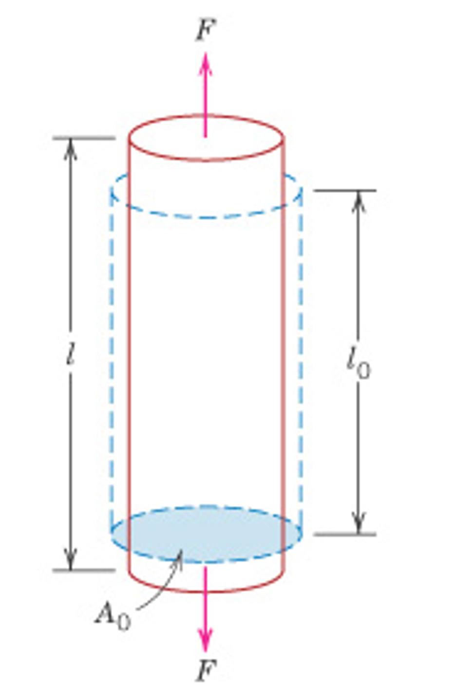
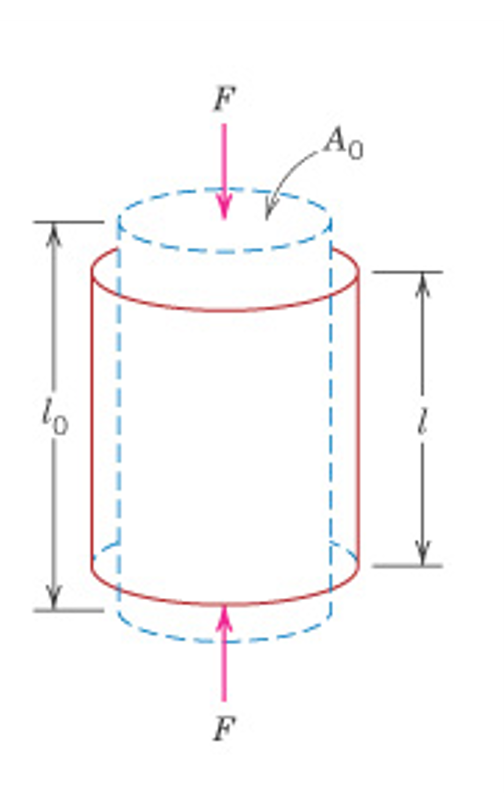
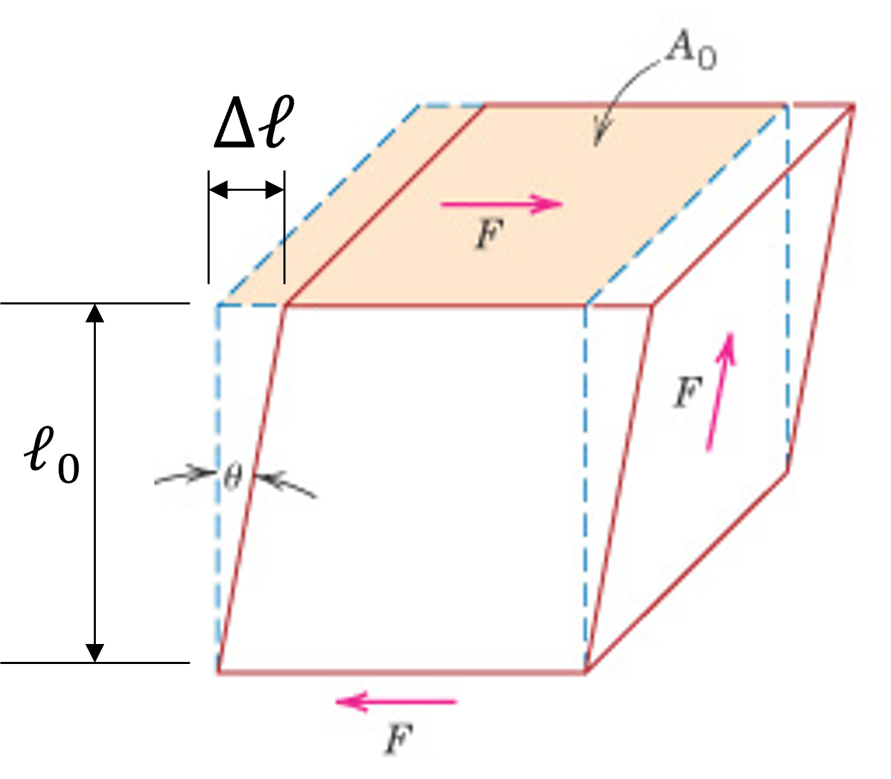
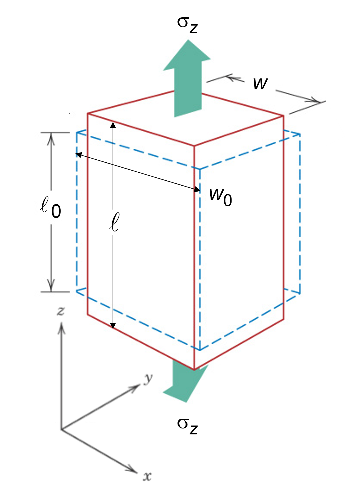
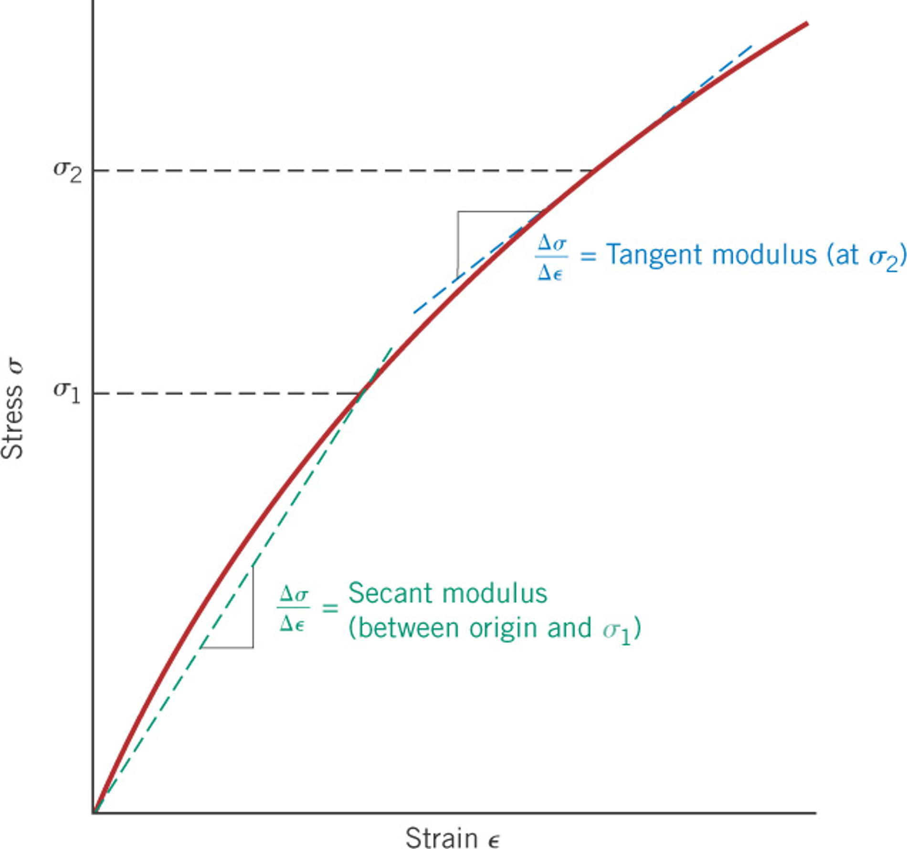
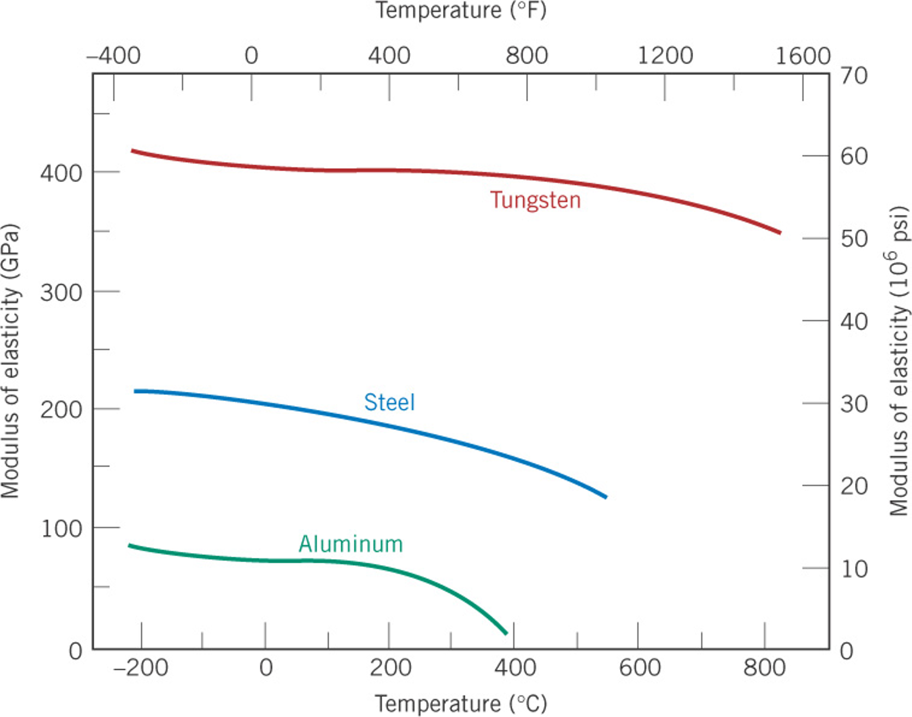

Mechanical behavior refers to how materials respond to external forces.
Understanding these properties helps engineers design safe and reliable structures.
The key factors influencing mechanical behavior include:
Material composition and structure
Temperature and environmental conditions
Applied force and loading rate
The video to the right shows the tensile testing of an elastic-plastic material. Notice at
the end of the video how the sample "necks" just prior to failure.


Engineering Stress: Defined as the force applied to a material divided by
its
original cross-sectional area:
\[ \sigma = \frac{F}{A_0} \]
where \( F \) is the applied force and \( A_0 \) is the original cross-sectional area. A tensile
force is defined as
positive while a compressive force is defined as negative.
Engineering Strain: The relative deformation of a material due to an applied
stress:
\[ \varepsilon = \frac{\Delta l}{l_0} \]
where \( \Delta l \) is the change in length, \(l-l_0\), and \( l_0 \) is the original length.
Shear Stress: Defined
as the force applied tangentially to a material divided by its original cross-sectional area:
\[ \tau = \frac{F}{A_0} \]
where \( F \) is the applied force and \( A_0 \) is the original area subjected to shear. Think
of a stack of cards, place your hands on the top and bottom and then slide your hands in
opposite directions. You just applied a shear stress.
Shear Strain: The angular distortion of a material when subjected to shear stress:
\[ \gamma = \frac{\Delta l}{l_0} \]
where \( \Delta l \) is the lateral displacement and \( l_0 \) is the height of the material as
shown in the figure.
Lateral Strains: The
strain experienced in the perpendicular
direction relative to the applied stress, for example:
\[ \varepsilon_x = \frac{\Delta w}{w_0} \]
where \(\Delta w\) and \(w_0\) are the change in width and original width, respectively. For a
cylindrical sample, we would have:
\[\varepsilon_r=\frac{\Delta r}{r_0}\]
Elastic Constants
Young’s Modulus (modulus of elasticity): A measure of the material stiffness that relates stress to strain,
given by the generalized form of Hooke's law:
\[ \sigma = E \,\varepsilon \]
A larger value of Young’s modulus indicates a stiffer material.
Hooke's law you have seen in Physics for
the stiffness of a spring, \(F=k\,x\).
In this course, "Hooke's law" will always refer to the stress-strain form, i.e. the
generalized form.
Shear Modulus (Modulus of Rigidity): A measure of a material’s resistance to shear
deformation, given by an analagous equation to Hooke's law:
\[ \tau = G\, \gamma \]
where \( G \) is the shear modulus, \( \tau \) is shear stress, and \( \gamma \) is shear strain.
Poisson’s Ratio: The
ratio of lateral strain (e.g. \(\varepsilon_x,\, \varepsilon_y, \text{ or } \varepsilon_r\)) to
axial strain, \(\varepsilon_z\), when a material is stretched or compressed:
\[ \nu = -\frac{\varepsilon_{x}}{\varepsilon_{z}}= -\frac{\varepsilon_{y}}{\varepsilon_{z}}=
-\frac{\varepsilon_{r}}{\varepsilon_{z}} \]
where \( \nu \) is Poisson’s ratio. The form \(-\varepsilon_r/\varepsilon_z\) would be used for the
case of a cylindrical sample.
Shear Modulus, Young's Modulus, and Poisson's ratio: These elastic constants are
not independent. Given any two, the third can be calculated according to the relation:
\[ G = \frac{E}{2(1+\nu)} \]
where \( G \) is the shear modulus, \( E \) is Young’s modulus, and \( \nu \) is Poisson’s ratio.
How good is this relationship? Try using the Granta EduPack software for database level 2 or
level 3 and plot the shear modulus on the y-axis and the equation, \(\frac{E}{2(1+\nu)}\) on
the x-axis.
Stress-Strain Diagram
Stress-strain curve showing linear-elastic behavior for strains up to 0.003.

Stress-strain curve showing non-linear elastic behavior typical of cast iron.
Materials exhibit various behaviors during a tensile test which are evident when the recorded data are presented as stress vs strain.
In the stress-strain data shown above, two different elastic behaviors are observed.
Linear Elastic Behavior: The material follows Hooke's law at the beginning stage of the tensile test. This is shown in the first figure where the linear region
is indicated and the slope of this region gives the Young's modulus. If the tensile test was to be stopped and reversed (unloaded) in this region, the linear curve would be followed back
to complete unloading with the sample returning to its original length.
Non-linear Elastic Behavior: In some materials, non-linear elastic behavior is observed as shown in the second figure for cast iron. If the test was stopped and the sample unloaded in this region, the sample would return back to its original length and hence the behavior is elastic.
However, no linear region exists to apply Hooke's law. Rather either a secant or tangen modulus is calculated.
The region beyond the elastic region is both elastic and plastic. This will be discussed in the next lesson.
Calculating Modulus
Young’s Modulus (E): This is calculated as the slope of the linear portion of the
stress-strain curve:
\[ E = \frac{\Delta \sigma}{\Delta \varepsilon} \]
where \( \Delta \sigma \) is the change in stress and \( \Delta \varepsilon \) is the corresponding
change in strain within the elastic region. The Young's modulus (modulus of elasticity) is dependent on temperature as shown in the figure below.

Materials Property Charts
Below are some materials property charts for the elastic modulus, shear modulus and poisson's ration versus density.